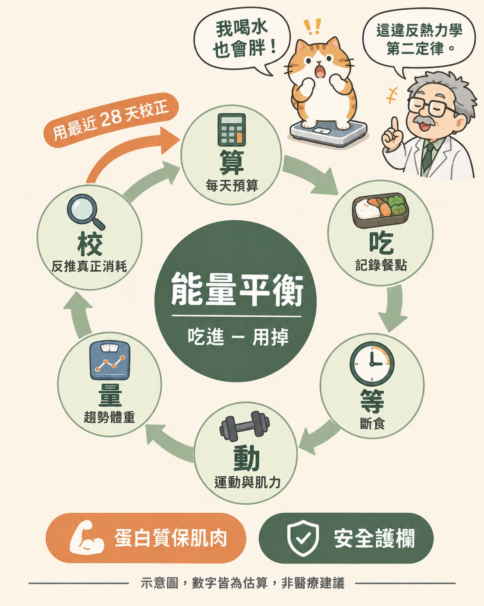

飲食
12.5點
今日剩餘（估算・示意）
- 點數制，熱量與營養素都是估算
- 7 天點數池，看一週的節奏
- 今日剩餘與存摺
- 常用食物庫
問題通常不是不夠努力，
而是少了一個看得見的節奏。
先算再吃，能等就等，
有動有量，天天一校。
蒜（算）吃（吃），等（等）凍（動）涼（量），笑（校）

點一站看說明
「能量不會憑空消失，只會轉移到你的肚子」
長期體重怎麼走，看的是吃進和用掉的熱量差多少。這一圈的每一站，都是在把這兩個數字估得更準。
例：1 公斤體重平均約 7,700 大卡（估算）。
「今天吃多不要慌，存摺幫你扛一扛」
用公式估你一天大概用掉多少熱量，換成點數（1 點約 40 大卡）。預算用一整週來算，今天多吃一點，其他天調回來就好。
公式對個人常差 10～20%，所以後面還有「量」和「校」。
「蛋白質打折，油炸加價」
拍照或打字記下來，App 依蛋白質、醣類、脂肪、纖維估算點數。蛋白質比較耐餓，消化時也花比較多熱量，所以同樣熱量，蛋白質算得比較便宜。
例：一個雞胸便當約 14 點（估算）。
「肚子會叫，但它會自己安靜」
什麼時候開始、結束，都由你決定；App 幫你計時、提醒，也說明這段時間身體一般會經過哪些階段（只是一般狀況，每個人不一樣）。
斷食不會讓熱量消失；有慢性病或長期用藥的人，請先問醫師。
「運動加分打七五折，手錶很會灌水」
記運動，或在 Android 從 Health Connect 自動匯入。消耗會換成可以多吃的點數，但只算 75%，因為手錶和公式通常估得偏多。
App 也會提醒你，每週留兩次給肌力訓練。
「體重不會說謊，只是很愛灌水」
每天的體重會因為水分、鹽分差 1～2 公斤。App 把跳動抹平成一條趨勢線。
一天多 1 公斤水分，趨勢只動 0.1 公斤。
「公式猜你，記錄懂你」
記錄夠完整後，App 用最近 28 天吃了多少、體重怎麼走，反推你一天大概用掉多少。要不要改用這個數字算預算，由你決定。
↺「校」完，再回到「算」
依身高體重估算每天的蛋白質目標，提醒你吃夠。
只提醒、不擋你：吃太少、斷食太久、體重變化太快時會提醒，必要時建議找醫師。
卡片上的數字是示意，非真實資料
今日剩餘點數、存摺、斷食計時和體重趨勢，打開第一頁就看得到。
示意畫面，非真實資料
今日點數
可選用 Google Gemini 估算食物營養（要先免費申請一組 Gemini 金鑰）。
MetaPulse 沒有自己的伺服器，所以也沒有地方可以收集你的資料。
記錄存在你的手機或電腦裡。
打開就能用，不用註冊或登入。
頁面裡沒有廣告，也沒有追蹤程式。
可選擇備份到你自己的 Google Drive，放在只有 App 能讀寫的隱藏資料夾。
照片只用來辨識，辨識完就不保存（除非你自己開啟「保留小縮圖」）。
生活裡常聽到各種飲食和斷食的建議，但真的要做，以前我都沒把握。現在別人建議我吃什麼，App 裡的 AI 會幫我估算點數；我想斷食多久，它幫我計時、提醒，也讓我知道斷食時一般會經過哪些階段；要回診時，也知道該帶哪些記錄去問醫生。
以前我常擔心：這樣做代謝會不會變差？肌肉會不會流失？不餓的時候不吃行不行？餓了要吃多少、吃什麼才不會打亂這個階段？現在每天的記錄都留著，有疑問就帶去問醫生，心裡踏實多了，也開始對每一天有了期待。
用了一個禮拜，我自己覺得生活和身體的節奏都順了不少。
對我來說，重點不是靠它改變了多少，而是它陪我照自己選的方向，一步一步往前走。
個人使用感受，不代表每個人都有相同效果。